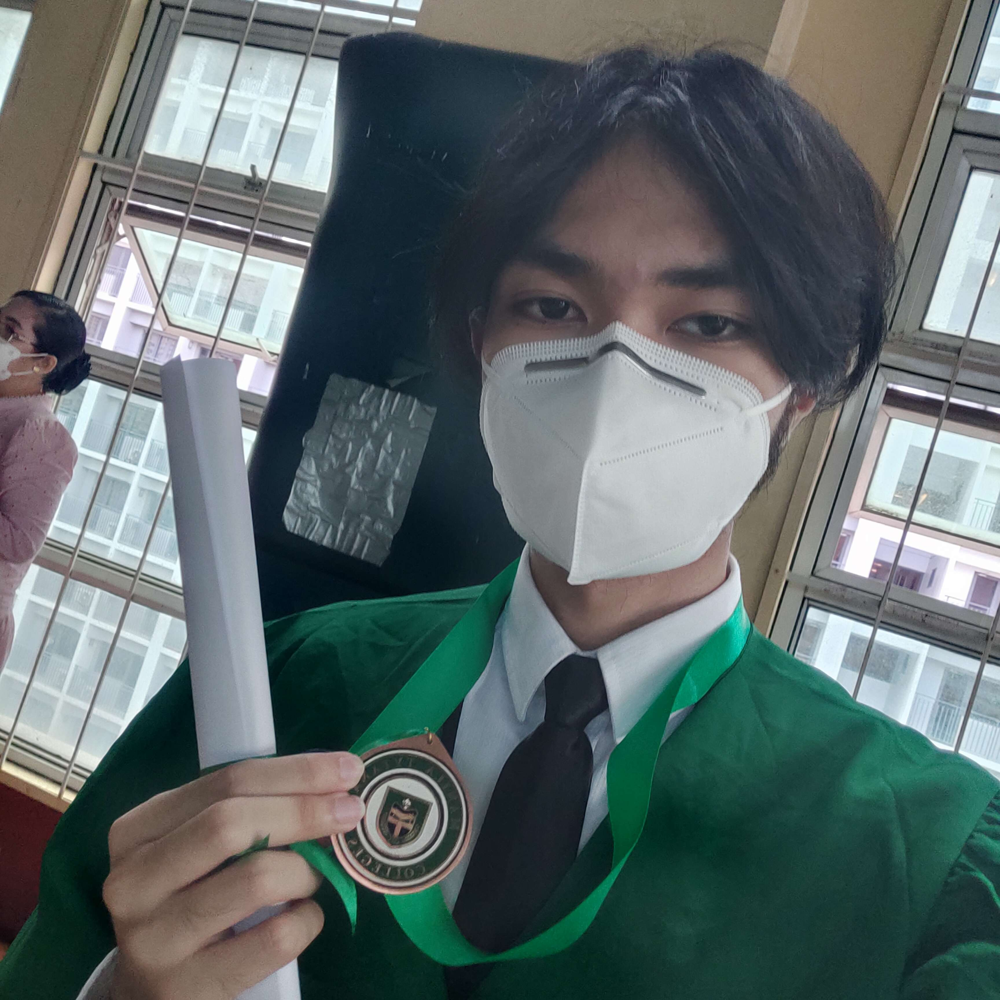
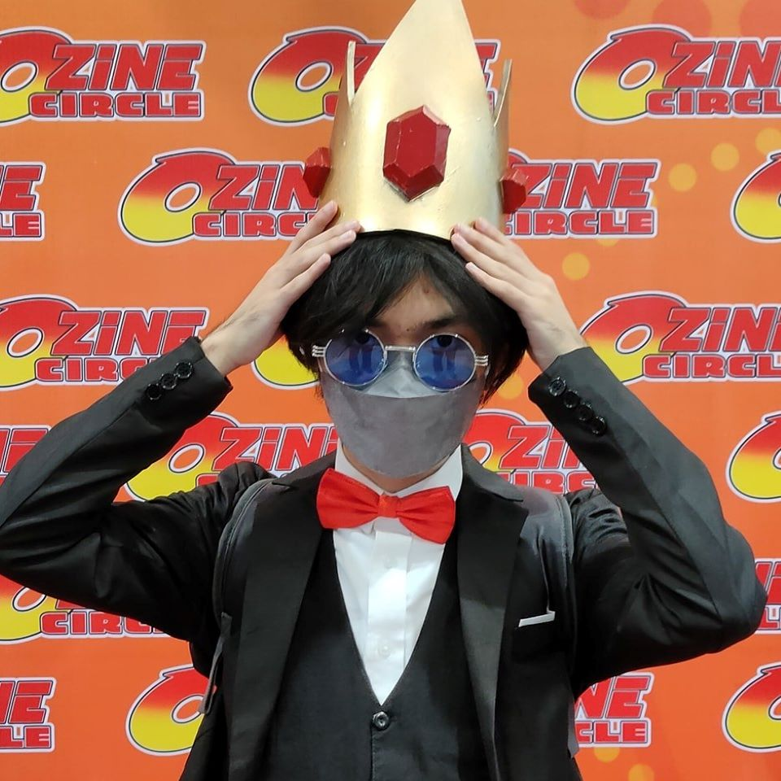
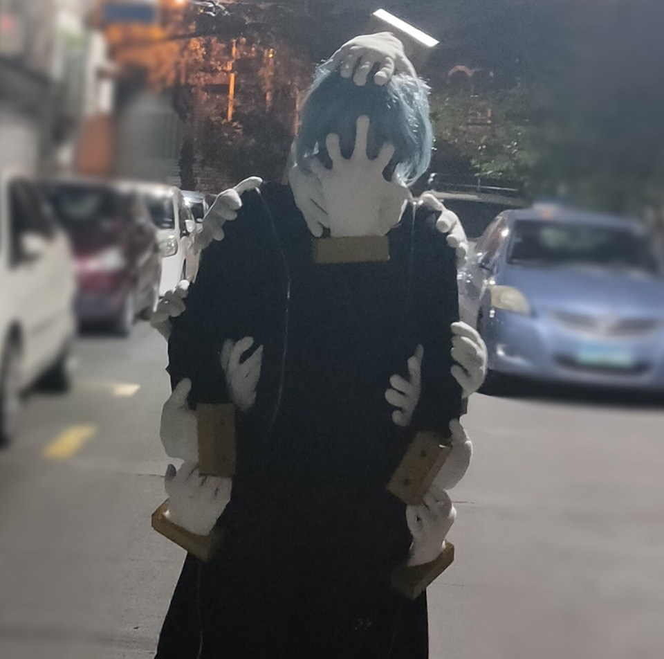
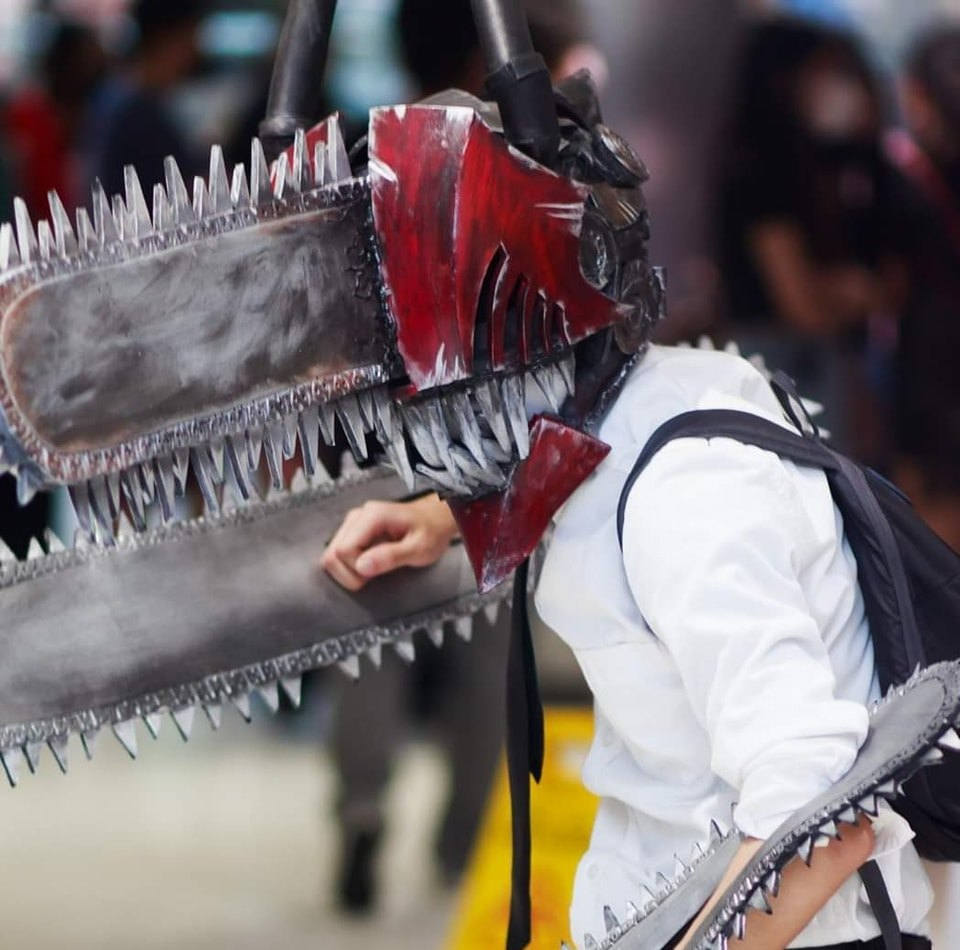
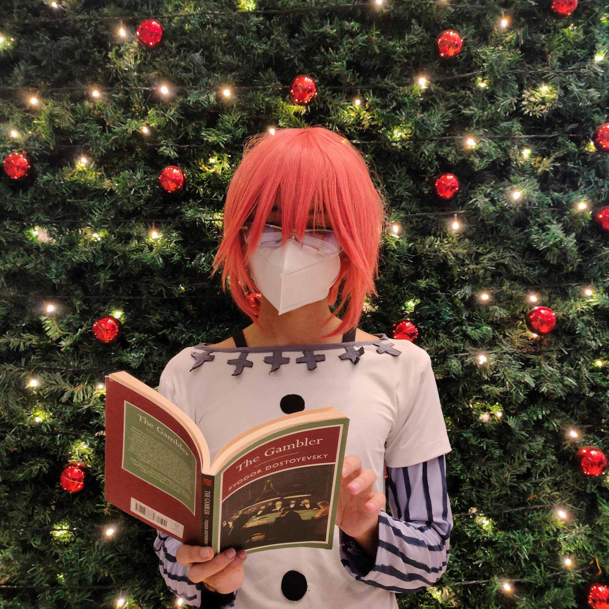

About Myself
My name is Dwight Kristian C. Ramirez. I am 19 years old and my birthday is on September 6, 2003. I currently live in Cuneta Avenue, Barangay 79, Zone 10, Pasay City. My current home is actually near the school I am attending to which is Manila Tytana Colleges. I studied at Benedictine Institute of Learning at Imus, Cavite during my Nursery to 6th Grade. I also studied at Ann Marris Montessori School when I was Junior High School up to my 10th Grade. Then I started my Senior High School Journey at Manila Tytana Colleges and I eventually decided to pursue IT College Course in MTC as well. My Dream is to become a Game Developer which is why I took the IT Course as it will significantly help me reach my goals.
Favorite Song
Yoasobi - Haruka ハルカ
One of my favorite Musical Duo is Yoasobi. Their songs are very catchy and it makes me feel relaxed and calm when listening to it. You will either feel hyped or sad when listening to Yoasobi as their songs have deep meaning and mixed feelings in it.
Achievements
I don't have many special achievements in life except that I am a consistent Honor Student since Grade School until Senior High School. I can passionately work hard toward my goals especially when I like the job I am doing.
Hobbies
I only have few hobbies but I love them and I am very interested into the stuffs I enjoy. My hobbies are Gaming, Coding, Learning Tech-stuffs, Hanging out with friends, and Cosplaying. I am honestly passionate when it comes to Gaming, I like the experience of playing a story-rich game and makes me feel alive especially if the plot is a masterpiece and the visuals are indeed feast to eyes of the players. This is also one of the main reasons why I want to pursue to become a Game Developer as they really make effort to create wonderful entertainment. I also like studying some stuffs that are related to technology since having any kind of knowldedge is the key of being an IT student. I am also unexpectedly very fond towards my friends especially my one circle with almost 7 years of true friendship. We hangout almost every night like during gaming or studying, this acts as "Tropa Time" for us. Lastly my most recent hobby is Cosplaying. I've been into the cosplaying community since 2019. It feels very fun to cosplay a character you like as it also boosts my confidence when in public. Here are some of my recent cosplays this year.
   
Life Quote
"We all have our own Freedom. We just need to open our wings."
Back to top